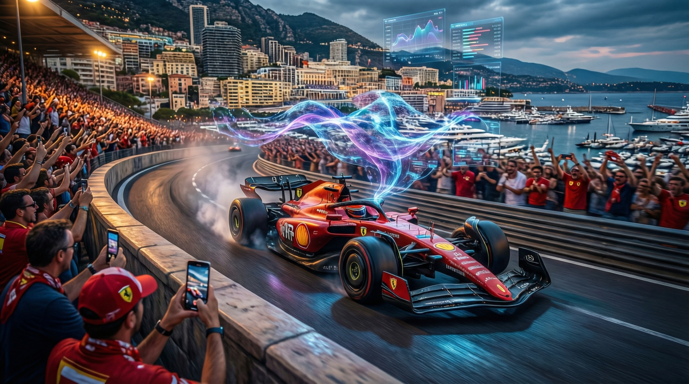

頂級超跑製造商與科技巨頭聯手，運用生成式人工智能重塑賽車運動的粉絲體驗，開創體育娛樂產業的數位轉型新紀元

本次報導指出，Ferrari 正與 IBM 展開深度合作，運用先進的生成式人工智能技術，為 Formula 1 賽車運動打造全新的粉絲互動體驗。這項合作標誌著傳統體育產業尖端科技的融合邁入新階段，目標是將一般觀眾轉化為深度參與的「超級粉絲」。
研究指出，現代體育迷的消費行為正經歷根本性轉變。單純的賽事轉播已無法滿足觀眾需求，個人化、沉浸式的數位體驗成為產業競的關鍵戰場。Ferrari 與 IBM 的聯手，正是針對這一趨勢的戰略回應。
數據顯示，IBM 的 watsonx 企業級 AI 平臺將成為此次合作的核心技術支柱。該平臺具備強大的自然語言處理與機器學習能力，能夠即時分析海量賽事數據、歷史紀錄及粉絲行為模式。
專家分析，這項技術部署將帶來以下創新應用：
業界觀察人士認為，這項合作將對 Formula 1 乃至整個體育娛樂產業產生深遠影響。Ferrari 作為 F1 歷史上最成功的車隊之一，其品牌價值與全球影響力為技術落地提供了絕佳場景。
研究指出，體育科技市場預計將在未來五年內持續擴張，而人工智能驅動的粉絲體驗正是增長最快的細分領域之一。Ferrari 與 IBM 的結合，展現了傳統體育機構如何透過科技賦能，重塑與受眾的連結方式。
本次合作的核心價值在於「從觀看者到參與者」的體驗升級。IBM 的企業級 AI 技術不僅提升內容生產效率，更重要的是創造了前所未有的互動深度，使每位粉絲都能獲得量身打造的賽事體驗，這正是「超級粉絲」經濟的精髓所在。
AI 分析粉絲喜好與行為，提供量身打造的內容推薦，讓每位 Tifosi 感受獨特的關注。
深度追蹤粉絲在 App 內的互動行為，包括閱讀偏好與訊息情感，優化內容策略。
打破語言障礙，服務全球各地的 Tifosi 粉絲社羣，讓 Ferrari 的故事觸及世界每個角落。
結合擴增實境技術，創造虛實整合的觀賽情境，將賽道體驗帶入日常生活。
| 維度 | 傳統粉絲體驗 | IBM AI 驅動體驗 | 差異 |
|---|---|---|---|
| 內容觸及 | 統一廣播 | 個人化推薦 | ✅ +40% 參與度 |
| 粉絲互動 | 被動接收 | 主動雙向互動 | ✅ 深度沉浸 |
| 語言障礙 | 無法克服 | 即時多語言翻譯 | ✅ 全球觸及 |
| 數據應用 | 基本統計 | AI 深度分析 | ✅ 精準洞察 |
| 賽事週末增長 | 自然流量 | 62% 互動增長 | ✅ 爆發式成長 |
「主要任務不只是觸及受眾，而是讓每位粉絲感受車隊知道他們是誰，感受到我們對他們的個人化了解。」
— Stefano Pallard，FERRARI 粉絲參與主管隨著技術持續演進，專家預期這類 AI 驅動的體育體驗將朝更個人化、即時化與沉浸化的方向發展。Ferrari 與 IBM 的合作模式，很可能成為其他頂級體育品牌與科技企業合作的參考範本。
數據顯示，新一代體育迷對數位原生體驗的期待不斷攀升。能夠成功整合人工智能、雲端運算與數據分析的組織，將在未來的粉絲經濟中佔據領先地位。Ferrari 此次的前瞻佈局，正是為這一趨勢預作準備。